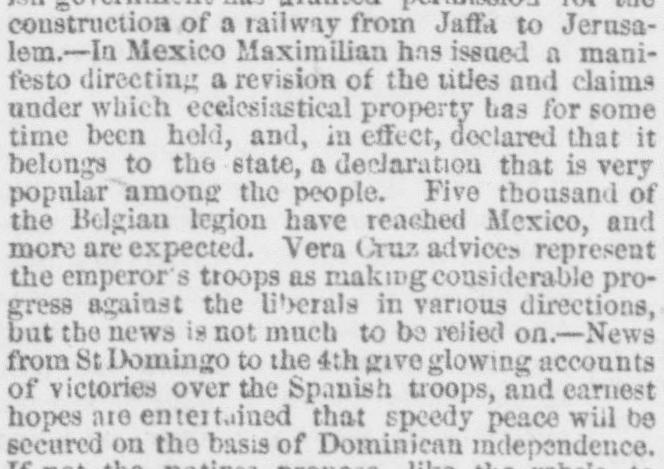
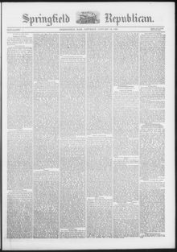

Vera Cruz advices represent the emperor s troops as making considerable progressNoticias de Veracruz presentan a las tropas del emperador haciendo considerable pro
Springfield Weekly Republican. Springfield, Mass., January 14, 1865. Page 1. Published by Samuel Bowles and Son. A weekly newspaper, 1851–1946.Springfield Weekly Republican. Springfield, Mass., 14 de enero de 1865. Página 1. Publicado por Samuel Bowles and Son. Periódico semanal, 1851–1946. View the originalVer el original


See the full pageVer la página completaThe Springfield weekly Republican reported on January 14, 1865, that news from St. Domingo up to the 4th provided glowing accounts of victories over Spanish troops. The dispatch noted earnest hopes for a speedy peace resulting in Dominican independence, alongside native intentions to fight to the last man and dollar if necessary.El Springfield weekly Republican reportó el 14 de enero de 1865 que las noticias recibidas de Santo Domingo hasta el día 4 daban cuenta entusiasta de victorias obtenidas sobre las tropas españolas. El despacho manifestaba fervientes anhelos de alcanzar una pronta paz fundada en la independencia dominicana, a la par de la firme resolución patriota de combatir hasta el último hombre y el último centavo de ser necesario.
FULL TEXT:TEXTO COMPLETO:
construction of a railway from Jaffa to Jerusalem.—In Mexico Maximilian has issued a manifesto directing a revision of the titles and claims under which ecclesiastical property has for some time been held, and, in effect, declared that it belongs to the state, a declaration that is very popular among the people. Five thousand of the Belgian legion have reached Mexico, and more are expected. Vera Cruz advices represent the emperor's troops as making considerable progress against the liberals in various directions, but the news is not much to be relied on.—News from St Domingo to the 4th give glowing accounts of victories over the Spanish troops, and earnest hopes are entertained that speedy peace will be secured on the basis of Dominican independence.construcción de un ferrocarril de Jaffa a Jerusalén. —En México Maximiliano ha emitido un manifiesto dirigiendo una revisión de los títulos y reclamos bajo los cuales la propiedad eclesiástica ha sido sostenida por algún tiempo, y, en efecto, declaró que pertenece al estado, una declaración que es muy popular entre el pueblo. Cinco mil de la legión belga han llegado a México, y más son esperados. Avisos de Veracruz representan a las tropas del emperador haciendo progreso considerable contra los liberales en varias direcciones, pero las noticias no son mucho para fiarse. —Noticias de Santo Domingo hasta el 4 dan cuentas resplandecientes de victorias sobre las tropas españolas, y se abrigan esperanzas fervientes de que una paz rápida será asegurada sobre la base de la independencia dominicana.
This collection gathers the coverage of the Dominican Republic in the American press, in the order it was published.Esta colección reúne la cobertura de la República Dominicana en la prensa estadounidense, en el orden en que se publicaron.